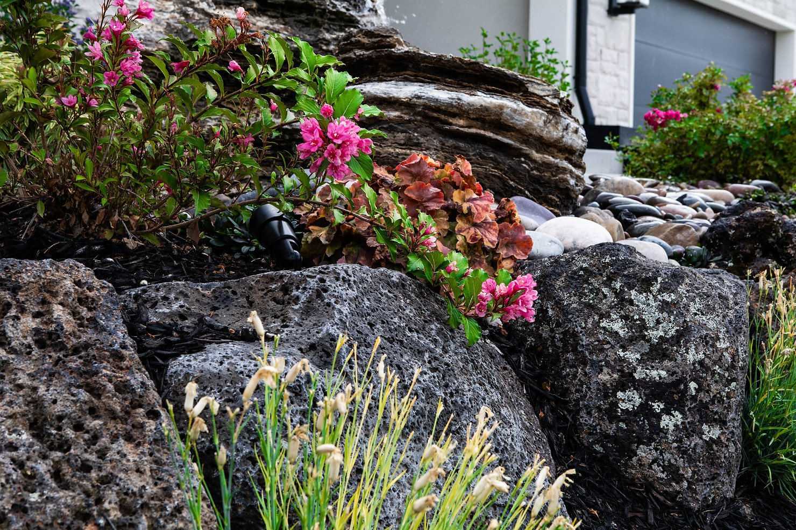

How Do I Choose the Right Plants for My Landscaping?

To select the right plants for your landscaping, consider factors such as your local climate, soil conditions, sun exposure, and desired aesthetic, then choose plants that thrive in those conditions and complement your overall design vision.
Creating a stunning landscape is like painting a masterpiece. Every plant is a brushstroke contributing to the overall beauty. But with countless plant options available, how do you choose the right ones for your yard? Understanding your landscape, knowing your plants, and designing with intention are key. At Ironhills Landscaping, we’re here to help you make these important decisions. Let's dive in!
Key Takeaways:
Understanding Your Landscape: Assess your soil, consider climate conditions, and evaluate sunlight exposure to choose plants that will thrive in your specific environment.
Plant Selection Criteria: Consider factors like native vs. exotic plants, annuals vs. perennials, plant size and growth rate, and maintenance requirements when selecting plants for your landscape.
Designing Your Landscape: Think about color schemes and themes, planting for seasonal interest, and creating focal points to create a cohesive and visually appealing garden design.
Popular Plant Choices: Trees, shrubs, flowers, and groundcovers all offer unique benefits and can be used to add beauty and functionality to your landscape design.
Practical Tips for Planting: Follow proper planting techniques, implement watering strategies to promote healthy growth, and use mulching and fertilizing techniques to maintain soil health.
Why Choosing the Right Plants Matters
Choosing the right plants isn't just about aesthetics; it's about ensuring that your garden thrives. The right plants can enhance your home's curb appeal, support local wildlife, and reduce maintenance time and costs. On the flip side, the wrong plants can lead to a host of problems, from poor growth and increased pests to higher water and maintenance demands.
Understanding Your Landscape
Assess Your Soil
Your soil type is the foundation of a successful garden. Different plants have different soil preferences—some thrive in sandy soils, while others prefer loam or clay. Conduct a soil test to determine its pH and nutrient levels. This will guide you in choosing plants that will flourish in your soil conditions.
Climate Considerations
Climate plays a significant role in plant selection. Plants are adapted to specific climates, and choosing ones that are well-suited to your local weather patterns will ensure better growth and health. Consider the USDA Plant Hardiness Zone Map to identify plants that will thrive in your area.
Sunlight Exposure
Understanding how much sunlight your garden receives throughout the day is critical. Some plants need full sun, while others prefer partial shade or full shade. Take note of the sun patterns in your yard and choose plants accordingly to ensure they get the right amount of light.
Plant Selection Criteria
Native vs. Exotic Plants
Native plants are adapted to your local environment and tend to be more resilient and lower maintenance. They support local wildlife and are less likely to become invasive. Exotic plants can add unique beauty but might require more care and have a higher risk of becoming invasive.
Annuals vs. Perennials
Annuals complete their life cycle in one year, offering vibrant color and blooms but requiring replanting each year. Perennials come back year after year, providing structure and consistency in your garden. Combining both can give you a mix of long-lasting and seasonal interest.
Plant Size and Growth Rate
Consider the mature size of plants and their growth rate. This will help you plan for the future and avoid overcrowding. Fast-growing plants can quickly fill in spaces, but they might also require more frequent pruning and maintenance.
Maintenance Requirements
Different plants have different care needs. Some are low maintenance, needing little more than occasional watering, while others require regular pruning, fertilizing, and pest control. Be honest about the amount of time and effort you can dedicate to garden maintenance.
Designing Your Landscape
Color Schemes and Themes
Choosing a color scheme can unify your garden and create a harmonious look. Decide if you want a monochromatic palette, a contrasting color scheme, or a complementary one. Themes, such as tropical, desert, or cottage garden, can also guide your plant choices.
Planting for Seasonal Interest
To keep your garden looking vibrant year-round, select plants that offer interest in different seasons. Mix spring bulbs, summer perennials, fall foliage plants, and winter evergreens. This ensures that your garden always has something to offer.
Creating Focal Points
Use plants to create focal points in your garden. This could be a striking tree, a cluster of colorful flowers, or a beautifully textured shrub. Focal points draw the eye and can be used to highlight special areas or features in your landscape.
Popular Plant Choices
Trees
Trees provide structure, shade, and beauty. Popular choices include maples, oaks, and cherry trees. Consider their mature size, growth rate, and maintenance needs when selecting trees for your landscape.
Shrubs
Shrubs offer texture and form. They can be used as hedges, borders, or standalone features. Favorites include boxwood, azaleas, and hydrangeas. Choose shrubs based on their size, flowering time, and foliage color.
Flowers
Flowers add color and charm to any garden. Consider a mix of annuals like marigolds and petunias, and perennials like daylilies and peonies. Think about bloom times, colors, and maintenance when selecting flowers.
Groundcovers
Groundcovers help prevent erosion and provide a lush, green carpet. Popular options include creeping thyme, periwinkle, and sedum. They are excellent for filling in spaces and reducing the need for mulch.
Practical Tips for Planting
Planting Techniques
Proper planting techniques are crucial for plant health. Dig a hole twice as wide and as deep as the root ball. Position the plant, backfill with soil, and water thoroughly. Ensure that the plant's root flare is at or slightly above ground level.
Watering Strategies
Watering is vital, especially for new plants. Water deeply and infrequently to encourage deep root growth. Use soaker hoses or drip irrigation to minimize water waste and keep the soil consistently moist but not waterlogged.
Mulching and Fertilizing
Mulch helps retain moisture, suppress weeds, and improve soil structure. Apply a 2-3 inch layer around plants, but keep it away from stems and trunks. Fertilize based on the specific needs of your plants, using organic or slow-release fertilizers to promote healthy growth.
FAQs
How do I know if a plant is suitable for my climate?
Check the USDA Plant Hardiness Zone Map and match plants to your zone for the best chance of success.
What are the benefits of using native plants?
Native plants are adapted to local conditions, require less maintenance, and support local wildlife.
How often should I water my plants?
Water deeply and infrequently, aiming for about 1 inch of water per week, adjusting for rainfall and plant needs.
Can I mix annuals and perennials in my garden?
Yes, mixing annuals and perennials can provide year-round interest and a variety of colors and textures.
What is the best way to prevent weeds?
Use mulch, plant groundcovers, and maintain healthy plants to compete with weeds. Hand-pull weeds regularly.
Create Your Dream Garden with Ironhills Landscaping
Ready to turn your landscaping dreams into reality? Contact Ironhills Landscaping today and let our team of experts guide you through every step of the process. From initial design concepts to final installation, we're here to ensure that your outdoor space is everything you've envisioned and more. Don't wait any longer—let's start transforming your yard into the garden of your dreams. Contact us now!
Recent Posts


If you live in Lehi, there's a good chance your yard isn't perfectly flat. Newer neighborhoods near Traverse Mountain, homes along the foothills, and lots that step down toward the street all share th